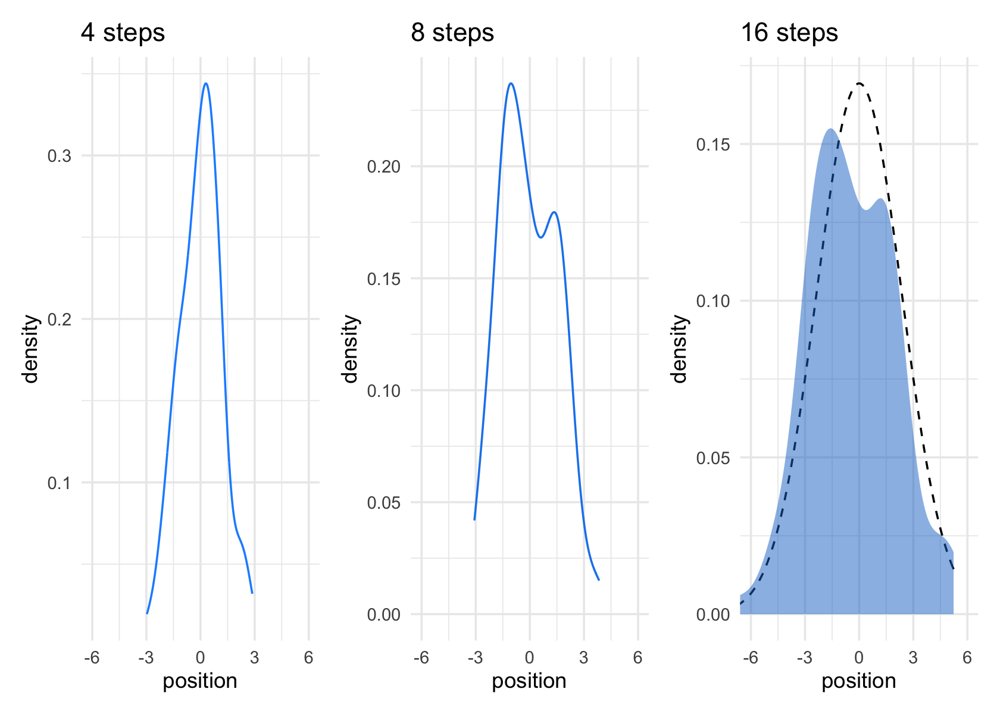
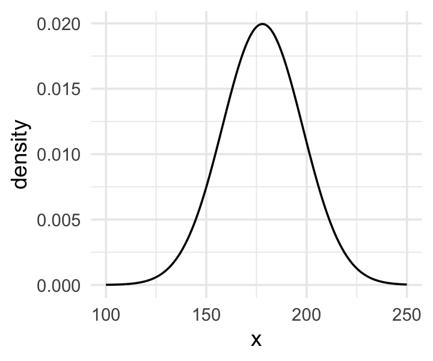

23 Chapter 4. Geocentric (linear) Models
geocentric model continues to make useful predictions
Linear regression is the geocentric model of applied statistics
introduces linear regression as a Bayesian procedure.
Other common and useful distributions will be used to build generalized linear models (GLMs).
Admit I am still not completely sure what these are. In Econometrics we talked about ‘linear in parameters’ models. I’ve dug into the technical definition of GLMs and it is rather obtuse!

23.1 Why normal distributions are normal
Many natural (and unnatural) processes have much heavier tails … A real and important example is financial time series
After laying out his soccer field coin toss shuffle premise, McElreath wrote:
It’s hard to say where any individual person will end up, but you can say with great confidence what the collection of positions will be. The distances will be distributed in approximately normal, or Gaussian, fashion. This is true even though the underlying distribution is binomial. It does this because there are so many more possible ways to realize a sequence of left-right steps that sums to zero. There are slightly fewer ways to realize a sequence that ends up one step left or right of zero, and so on, with the number of possible sequences declining in the characteristic bell curve of the normal distribution. (p. 72)
Normal by addition.
coding football steps
# we set the seed to make the results of `runif()` reproducible.
set.seed(4)
pos <-
# make data with 100 people, 16 steps each with a starting point of `step == 0` (i.e., 17 rows per person)
crossing(person = 1:100,
step = 0:16) %>%
#DR: 'crossing is a great shortcut to 'create all combinations''
# for all steps above `step == 0` simulate a `deviation`
mutate(deviation = map_dbl( #DR: `map_dbl` to make it a 'vector of numbers' rather than a list
step, #for all 16 step entries
~if_else(. == 0, 0, runif(1, -1, 1)))) %>% #defines a function with '~', 0 for step 0, otherwise a uniform distribution step length each time
# after grouping by `person`, compute the cumulative sum of the deviations, then `ungroup()`
group_by(person) %>%
mutate(position = cumsum(deviation)) %>% #cumsum is great
ungroup()Code
glimpse(pos)Rows: 1,700
Columns: 4
$ person <int> 1, 1, 1, 1, 1, 1, 1, 1, 1, 1, 1, 1, 1, 1, 1, 1, 1, 2, 2, 2, 2, 2, 2, 2, 2, 2, 2,…
$ step <int> 0, 1, 2, 3, 4, 5, 6, 7, 8, 9, 10, 11, 12, 13, 14, 15, 16, 0, 1, 2, 3, 4, 5, 6, 7…
$ deviation <dbl> 0.00000000, -0.98210841, -0.41252078, -0.44525008, 0.62714843, -0.47914446, 0.44…
$ position <dbl> 0.0000000, -0.9821084, -1.3946292, -1.8398793, -1.2127308, -1.6918753, -1.243063…Code
precis(pos) mean sd 5.5% 94.5% histogram
person 50.50000000 28.874564 6.0000000 95.0000000 ▇▇▇▇▇▇▇▇▇▇
step 8.00000000 4.900421 0.0000000 16.0000000 ▇▅▅▅▅▅▅▅
deviation -0.02345358 0.560043 -0.8949205 0.8721156 ▅▅▅▃▇▅▅▃▃▃
position -0.16368313 1.609085 -2.6457540 2.3513754 ▁▁▁▁▂▃▇▅▃▁▁▁▁Here’s the actual plot code.
Code
(
p1 <- ggplot(data = pos,
aes(x = step, y = position, group = person)) + #'where am I (vertical) at each step (horizontal) ... not sure what 'group' does here
geom_vline(xintercept = c(4, 8, 16), linetype = 2) + #add vertical lines for x intercepts at steps 4 8 and 16
geom_line(aes(color = person < 4, alpha = person < 4)) + #the main lines of interest
#focusing on 4 specific cases
scale_color_manual(values = c("skyblue4", "black")) +
scale_alpha_manual(values = c(1/7, 1)) +
scale_x_continuous("step number", breaks = c(0, 4, 8, 12, 16)) + # ticks and labels on the bottom, light gridlines
theme(legend.position = "none")
)
- precisely what does ‘group’ do in the above?
Code for plotting all random walks on soccer field, steps, and densities
Plots at 4 and 8 steps:
Code
# Figure 4.2.a.
# Figure 4.2.a.
p1 <-
pos %>%
filter(step == 4) %>%
ggplot(aes(x = position)) +
geom_line(stat = "density", color = "dodgerblue1") +
coord_cartesian(xlim = c(-6, 6)) +
labs(title = "4 steps")
# Figure 4.2.b.
p2 <-
pos %>%
filter(step == 8) %>%
ggplot(aes(x = position)) +
geom_density(color = "dodgerblue2") +
coord_cartesian(xlim = c(-6, 6)) +
labs(title = "8 steps")Get the SD at 16 steps for plotting the functional normal distribution to compare it to.
Plot at 16 steps, overlay normal distribution (DR – I put in the SD as an object from above)
Code
# Figure 4.2.c.
# Figure 4.2.c.
p3 <-
pos %>%
filter(step == 16) %>%
ggplot(aes(x = position)) +
stat_function(fun = dnorm,
args = list(mean = 0, sd = pos_sd[[1,1]]),
linetype = 2) + # 2.180408 came from the previous code block
geom_density(color = "transparent", fill = "dodgerblue3", alpha = 1/2) +
coord_cartesian(xlim = c(-6, 6)) +
labs(title = "16 steps",
y = "density")
# combine the ggplots
p1 | p2 | p3
While we were at it, we explored a few ways to express densities. The main action was with the
geom_line(),geom_density(), andstat_function()functions, respectively.
DR: geom_line(stat = "density"... might be the same as geom_density, stat_function is mainly for analytical densities?
But why?
Any process that ads together random values from the same distribution converges to a normal. But it’s not easy to grasp why addition should result in a bell curve of sums. Here’s a conceptual way to think of the process. Whatever the average value of the source distribution, each sample from it can be thought of as a fluctuation from the average value. When we begin to add these fluctuations together, they also begin to cancel one another out. A large positive fluctuation will cancel a large negative one. The more terms in the sum, the more chances for each fluctuation to be canceled by another, or by a series of smaller ones in the opposite direction. So eventually the most likely sum, in the sense that there are the most ways to realize it, will be a sum in which every fluctuation is canceled by another, a sum of zero (relative to the mean). (pp. 73–74)
Normal by multiplication
small effects that multiply together are approximately additive, and so they also tend to stabilize on Gaussian distributions
Large deviates that are multiplied together do not produce Gaussian distributions, but they do tend to produce Gaussian distributions on the log scale
Skipped coding this for now
Using Gaussian distributions (“but why?”)
Ontological justification.
The Gaussian is
a widespread pattern, appearing again and again at different scales and in different domains. Measurement errors, variations in growth, and the velocities of molecules all tend towards Gaussian distributions. These processes do this because at their heart, these processes add together fluctuations. And repeatedly adding finite fluctuations results in a distribution of sums that have shed all information about the underlying process, aside from mean and spread. One consequence of this is that statistical models based on Gaussian distributions cannot reliably identify micro-process. (p. 75)
~I.e., we cannot ‘prove what we assumed’.
Kurz: But they can still be useful.
23.1.0.1 Epistemological justification.
Another route to justifying the Gaussian as our choice of skeleton, and a route that will help us appreciate later why it is often a poor choice, is that it represents a particular state of ignorance. When all we know or are willing to say about a distribution of measures (measures are continuous values on the real number line) is their mean and variance, then the Gaussian distribution arises as the most consistent with our assumptions.
That is to say that the Gaussian distribution is the most natural expression of our state of ignorance, because if all we are willing to assume is that a measure has finite variance, the Gaussian distribution is the shape that can be realized in the largest number of ways and does not introduce any new assumptions. It is the least surprising and least informative assumption to make. In this way, the Gaussian is the distribution most consistent with our assumptions… If you don’t think the distribution should be Gaussian, then that implies that you know something else that you should tell your golem about, something that would improve inference. (pp. 75–76)
E.g., to a skeptical audience or ‘client’?
From McElreath:
By the ontological justification, the world is full of Gaussian distributions, approximately.
By the epistemological justification, the Gaussian represents a particular state of ignorance. When all we know or are willing to say about a distribution of measures (measures are continuous values on the real number line) is their mean and variance, then the Gaussian distribution arises as the most consistent with our assumptions maximum entropy?
if all we are willing to assume is that a measure has finite variance, the Gaussian distribution is the shape that can be realized in the largest number of ways
23.1.0.2 Overthinking: Gaussian distribution.
(Kurz quotes below)
Let \(y\) be the criterion (DR: why ‘criterion’?), \(\mu\) be the mean, and \(\sigma\) be the standard deviation. Then the probability density of some Gaussian value \(y\) is
\[p(y|\mu, \sigma) = \frac{1}{\sqrt{2 \pi \sigma^2}} \exp \Bigg (- \frac{(y - \mu)^2}{2 \sigma^2} \Bigg).\]
Why not demystify that monster with a little R code? For simplicity, we’ll look at \(p(y)\) over a series of \(y\) values ranging from -4 to 4, holding \(\mu = 0\) and \(\sigma = 1\). Then we’ll plot.
Code
# define our input values
tibble(y = seq(from = -4, to = 4, by = .1),
mu = 0,
sigma = 1) %>%
# compute p(y) using a hand-made gaussian likelihood
mutate(
p_y = (1 / sqrt(2 * pi * sigma^2)) * exp(-(y - mu)^2 / (2 * sigma^2))) %>%
# plot!
ggplot(aes(x = y, y = p_y)) +
geom_line() +
ylab(expression(italic(p)(italic("y|")*mu==0*","~sigma==1)))
You get the same results if you switch out that mutate line with
mutate(p_y = dnorm(y)) %>%. To learn more, execute?dnorm.
DR: how does executing it demystify it?
23.2 A language for describing models (4.2)
For example:
\[\begin{align*} \text{criterion}_i & \sim \text{Normal}(\mu_i, \sigma) \\ \mu_i & = \beta \times \text{predictor}_i \\ \beta & \sim \text{Normal}(0, 10) \\ \sigma & \sim \text{HalfCauchy}(0, 1). \end{align*}\]The combination of variables and their probability distributions defines a joint generative model that can be used both to simulate hypothetical observations as well as analyze real ones.
DR: No ‘error term’ as in standard econometrics statement
We no longer have to remember seemingly arbitrary lists of bizarre conditions like homoscedasticity (constant variance), because we can just read these conditions from the model definitions. We specify distributions rather than error terms and conditions
DR: Note these specific distributions are ‘stronger assumptions’, which people may argue are harder to justify
Re-describing the globe tossing model (in these terms)
DR: We previously just described it in words iirc
For the globe tossing model, the probability \(p\) of a count of water \(w\) based on \(n\) trials was
\[\begin{align*} w & \sim \text{Binomial}(n, p) \\ p & \sim \text{Uniform}(0, 1). \end{align*}\]‘probability p and data drawn’ / ‘probability data drawn’
Well, it’s what we compute in the grid approximation, for each probability.
Remember the denominator is the same for all values of p.
Code
# A tibble: 6 × 6
p_grid w n prior likelihood posterior
<dbl> <dbl> <dbl> <dbl> <dbl> <dbl>
1 0 6 9 1 0 0
2 0.0101 6 9 1 8.65e-11 8.74e-12
3 0.0202 6 9 1 5.37e- 9 5.43e-10
4 0.0303 6 9 1 5.93e- 8 5.99e- 9
5 0.0404 6 9 1 3.23e- 7 3.26e- 8
6 0.0505 6 9 1 1.19e- 6 1.21e- 7In case you were curious, here’s what they look like.
Code
d %>%
select(-w, -n) %>%
gather(key, value, -p_grid) %>%
# this line allows us to dictate the order the panels will appear in
mutate(key = factor(key, levels = c("prior", "likelihood", "posterior"))) %>%
ggplot(aes(x = p_grid, ymin = 0, ymax = value, fill = key)) +
geom_ribbon() +
scale_fill_manual(values = c("blue", "red", "purple")) +
scale_y_continuous(NULL, breaks = NULL) +
theme(legend.position = "none") +
facet_wrap(~key, scales = "free")
The posterior is a combination of the prior and the likelihood. When the prior is flat across the parameter space, the posterior is just the likelihood re-expressed as a probability. As we go along, you’ll see that we almost never use flat priors in practice.
23.3 A Gaussian model of height (4.3)
His blog entry is better formatted and talks through some parts of the intuition more. You may find it more useful than the present notes. I incorporate some of it below (with acknowledgement)
single measurement variable to model as a Gaussian distribution. There will be two parameters describing the distribution’s shape, the mean - and the standard deviation
the ‘estimate’ here will be the entire posterior distribution, not any point within it
And as a result, the posterior distribution will be a distribution of Gaussian distributions. or of the parameters of these
There are an infinite number of possible Gaussian distributions. Some have small means. Others have large means. Some are wide, with a large \(\sigma\). Others are narrow. We want our Bayesian machine to consider every possible distribution, each defined by a combination of \(\mu\) and \(\sigma\), and rank them by posterior plausibility. (p. 79)
The data (height)
Let’s get the Howell (2000, 2010) data from McElreath’s rethinking package.
(Kurz) Here we open our main statistical package, Bürkner’s brms. But before we do, we’ll want to detach the rethinking package. R will not allow users to use a function from one package that shares the same name as a different function from another package if both packages are open at the same time. The rethinking and
brmspackages are designed for similar purposes and, unsurprisingly, overlap in the names of their functions. To prevent problems, it is a good idea to make sure rethinking is detached before using brms. To learn more on the topic, see this R-bloggers post.
Go ahead and investigate the data with str(), the tidyverse analogue for which is glimpse().
Code
d %>%
str()'data.frame': 544 obs. of 4 variables:
$ height: num 152 140 137 157 145 ...
$ weight: num 47.8 36.5 31.9 53 41.3 ...
$ age : num 63 63 65 41 51 35 32 27 19 54 ...
$ male : int 1 0 0 1 0 1 0 1 0 1 ...Here are the height values
Code
d %>%
select(height) %>%
head() height
1 151.765
2 139.700
3 136.525
4 156.845
5 145.415
6 163.830We can use filter() to make an adults-only data frame.
Code
d2 <-
d %>%
filter(age >= 18)There are a lot of ways we can make sure our d2 has 352 rows. Here’s one.
Code
d2 %>%
count() n
1 352The model
as mentioned earlier in this chapter, the empirical distribution needn’t be actually Gaussian in order to justify using a Gaussian probability distribution why not?
The i.i.d. assumption is about how the golem represents its uncertainty. It is an epistemological assumption. It is not a physical assumption about the world, an ontological one. E. T. Jaynes (1922-1998) called this the mind projection fallacy, the mistake of confusing epistemological claims with ontological claims.71 The point isnt that epistemology trumps reality, but that in ignorance of such correlations the best distribution may be i.i.d.72
The likelihood for our model is
\[h_i \sim \operatorname{Normal}(\mu, \sigma),\]
our \(\mu\) prior will be
\[\mu \sim \operatorname{Normal}(178, 20),\]
and our prior for \(\sigma\) will be
\[\sigma \sim \operatorname{Uniform}(0, 50).\]
Here’s the shape of the prior for \(\mu\) in \(N(178, 20)\).
Code

The prior for \(\mu\) is a broad Gaussian prior, centered on 178 cm, with 95% of probability between 178 - 40 cm. Why 178 cm? Your author is 178 cm tall. And the range from 138 cm to 218 cm encompasses a huge range of plausible mean heights for human populations. So domain-specific information has gone into this prior.
I guess this is fixed later?
get_prior
At this point Sleegers’ notes consider the brms function get_prior for the mean only model height ~ 1. get_prior peeks at the data to consider an (?appropriate) prior.
Code
brms::get_prior(height ~ 1, data = d2) prior class coef group resp dpar nlpar bound source
student_t(3, 154.3, 8.5) Intercept default
student_t(3, 0, 8.5) sigma defaultIt’s not clear to me what get_prior is doing here, or what its logic is. It would seem to be using the data to suggest priors, which McElreath seems to be against (but the ‘empirical bayes’ people seem to like). What exactly is the justification for doing this? the people who designed this package must have had something in mind.
Anyways, get, suggesting_prior suggests specific student=t distributions for the intercept (mean) and for sigma. These t-distributions have three parameters, one of which (the ‘degrees of freedom’) affects the skewness/fatness of tails relative to the normal distribution.
Why simulate the prior probability distribution?
Once you’ve chosen priors for \(h\), \(\mu\) and \(\sigma\), these imply a joint prior distribution of individual heights. By simulating from this distribution, you can see what your choices imply about observable height. This helps you diagnose bad choices.
… it can be quite hard to anticipate how priors influence the observable variables
The prior doesn’t affect the results much if you have a reasonably diffuse prior and lots of data. However: > There are plenty of inference problems for which the data alone are not sufficient, no matter how numerous. Bayes lets us proceed in these cases. But only if we use our scientific knowledge to construct sensible priors. Using scientific knowledge to build priors is not cheating. The important thing is that your prior not be based on the values in the data, but only on what you know about the data before you see it.
…
so to get the joint likelihood across all the data, we have to compute the probability for each \(h_i\) [observed height] and then multiply all these likelihoods together
Below: ggplot of the prior for \(\sigma\), a uniform distribution with a minimum value of 0 and a maximum value of 50.1
Code

We can simulate from both priors at once to get a prior probability distribution of heights.
Code
n <- 1e4
set.seed(4)
tibble(sample_mu = rnorm(n, mean = 178, sd = 20), #10k draws from normal for mean height
sample_sigma = runif(n, min = 0, max = 50)) %>% #10k draws from uniform for sd of height
mutate(x = rnorm(n, mean = sample_mu, sd = sample_sigma)) %>%
#10k draws of height from normal with mean and sd from above in each case?
ggplot(aes(x = x)) +
geom_density(fill = "black", size = 0) +
scale_y_continuous(NULL, breaks = NULL) +
labs(subtitle = expression(Prior~predictive~distribution~"for"~italic(h[i])),
x = NULL) +
theme(panel.grid = element_blank())
As McElreath wrote, we’ve made a “vaguely bell-shaped density with thick tails. It is the expected distribution of heights, averaged over the prior” (p. 83).
Grid approximation of the posterior distribution
All mean and sd height values to consider
Rows: 40,000
Columns: 2
$ mu <dbl> 140, 140, 140, 140, 140, 140, 140, 140, 140, 140, 140, 140, 140, 140, 140, 140, 140,…
$ sigma <dbl> 4.000000, 4.025126, 4.050251, 4.075377, 4.100503, 4.125628, 4.150754, 4.175879, 4.20…d_grid contains every combination of mu and sigma across their specified values. Instead of base R sapply(), we’ll do the computations by making a custom function which we’ll plug into purrr::map2().
maps the log llhd of the data (and params) for each combination in d_grid, converts to a relative probability
d_grid <-
d_grid %>%
mutate(log_likelihood = map2(mu, sigma, grid_function)) %>% #maps
unnest(log_likelihood) %>%
mutate(prior_mu = dnorm(mu, mean = 178, sd = 20, log = T),
prior_sigma = dunif(sigma, min = 0, max = 50, log = T)) %>%
mutate(product = log_likelihood + prior_mu + prior_sigma,
max_product =max(product)) %>%
mutate(probability = exp(product - max(product)) # exponentiate the log likelihood to get the probability; but the individual probability densities are meaningless. For computational reasons (I think) we state these relative to the max value
)
d_grid %>% arrange(-probability) %>%
head() %>% kable(cap =
"highest prob. rows") %>% kable_styling()| mu | sigma | log_likelihood | prior_mu | prior_sigma | product | max_product | probability |
|---|---|---|---|---|---|---|---|
| 154.5729 | 7.743719 | -1219.408 | -4.600709 | -3.912023 | -1227.920 | -1227.92 | 1.0000000 |
| 154.5729 | 7.718593 | -1219.408 | -4.600709 | -3.912023 | -1227.921 | -1227.92 | 0.9999332 |
| 154.5729 | 7.768844 | -1219.415 | -4.600709 | -3.912023 | -1227.928 | -1227.92 | 0.9927172 |
| 154.5729 | 7.693467 | -1219.415 | -4.600709 | -3.912023 | -1227.928 | -1227.92 | 0.9923983 |
| 154.6734 | 7.743719 | -1219.423 | -4.594836 | -3.912023 | -1227.930 | -1227.92 | 0.9905659 |
| 154.6734 | 7.718593 | -1219.423 | -4.594836 | -3.912023 | -1227.930 | -1227.92 | 0.9904006 |
maps the log llhd of the data (and params) for each combination in d_grid, converts to a relative probability
d_grid %>% arrange(-probability) %>% slice_sample(n = 10) %>% kable(cap =
"random rows") %>% kable_styling()| mu | sigma | log_likelihood | prior_mu | prior_sigma | product | max_product | probability |
|---|---|---|---|---|---|---|---|
| 141.2060 | 7.793970 | -1738.975 | -5.606916 | -3.912023 | -1748.494 | -1227.92 | 0.0000000 |
| 156.0804 | 5.306533 | -1298.278 | -4.515257 | -3.912023 | -1306.705 | -1227.92 | 0.0000000 |
| 145.3266 | 4.653266 | -2049.097 | -5.249107 | -3.912023 | -2058.258 | -1227.92 | 0.0000000 |
| 146.2312 | 4.603015 | -1938.764 | -5.176245 | -3.912023 | -1947.852 | -1227.92 | 0.0000000 |
| 160.0000 | 4.804020 | -1554.369 | -4.319671 | -3.912023 | -1562.601 | -1227.92 | 0.0000000 |
| 140.8040 | 6.060301 | -2155.813 | -5.644097 | -3.912023 | -2165.369 | -1227.92 | 0.0000000 |
| 155.7789 | 8.547739 | -1226.091 | -4.531893 | -3.912023 | -1234.535 | -1227.92 | 0.0013412 |
| 147.8392 | 5.231156 | -1584.059 | -5.051763 | -3.912023 | -1593.023 | -1227.92 | 0.0000000 |
| 159.0955 | 6.512563 | -1315.027 | -4.361397 | -3.912023 | -1323.301 | -1227.92 | 0.0000000 |
| 149.1457 | 7.115578 | -1325.270 | -4.955382 | -3.912023 | -1334.138 | -1227.92 | 0.0000000 |
Above, we compute the likelihood of each data point given each combination of parameters under consideration, and multiply these together (or ‘add the log probabilities’). We compute the log probability of these parameters, and add these to the probability of the data under these parameters to get the joint (log) likelihood. Erexponentiate the log likelihood to get the probability. However, with a continuous probabilityindividual probability density values are meaningless; only the relative values matter. For computational reasons (I think) we state each of these relative to the max value of the probabilities.
Above, we present the ‘highest probability’ values as well as some randomly chosen values.
Following Kurz, we can plot ‘where the model thinks the most likely values of our parameters lie’, e.g., in a heatmap plot:
Heatmap:
d_grid %>%
ggplot(aes(x = mu, y = sigma)) +
geom_raster(aes(fill = probability),
interpolate = T) +
scale_fill_viridis_c(option = "A") +
labs(x = expression(mu),
y = expression(sigma)) +
coord_cartesian(xlim = range(d_grid$mu)*.7+50,
ylim = range(d_grid$sigma)*.7 + 3.5) +
theme(panel.grid = element_blank())
Note that the posterior distribution of parameters need not be a circle or even symmetric. They may be correlated. Certain parameters may be ‘jointly more’ or ‘jointly less’ likely, as the process that generated the data we see may (e.g.) only tend be likely to come from high mean values when the standard deviation tends to be large.
Sampling from the posterior (3.4)
McElreath:
since there are two parameters, and we want to sample combinations of them, we first randomly sample row numbers in post in proportion to the values in
post$prob. Then we pull out the parameter values on those randomly sampled rows draw from grid in proportion to calculated likelihoods.
The jargon “marginal” here means “averaging over the other parameters.”
And this is quite typical. As sample size increases, posterior densities approach the normal distribution.
DR: All posterior densities? When and why?
Kurz:
We can use
dplyr::sample_n()to sample rows, with replacement, fromd_grid.
Note the ‘weight=probability’ argument
Code
set.seed(4)
d_grid_samples <-
d_grid %>%
sample_n(size = 1e4, replace = T, weight = probability)
d_grid_samples %>%
ggplot(aes(x = mu, y = sigma)) +
geom_point(size = .9, alpha = 1/15) +
scale_fill_viridis_c() +
labs(x = expression(mu[samples]),
y = expression(sigma[samples])) +
theme(panel.grid = element_blank())
We can use
gather()and thenfacet_warp()to plot the densities for bothmuandsigmaat once.
Code
d_grid_samples %>%
select(mu, sigma) %>%
gather() %>% #'gather' seems to make it longer, going from mu and sigma being the colun names to making one 'value' row for each mu and one for each sigma
ggplot(aes(x = value)) +
geom_density(fill = "grey33", size = 0) +
scale_y_continuous(NULL, breaks = NULL) +
xlab(NULL) +
theme(panel.grid = element_blank()) +
facet_wrap(~key, scales = "free")
We’ll use the tidybayes package to compute their posterior modes and 95% HDIs.
Code
# A tibble: 2 × 7
key value .lower .upper .width .point .interval
<chr> <dbl> <dbl> <dbl> <dbl> <chr> <chr>
1 mu 155. 154. 155. 0.95 mode hdi
2 sigma 7.82 7.14 8.30 0.95 mode hdi DR: I’m not entirely sure what value.lower and upper refer to here. Is it a 95% HDI or something?
Let’s say you wanted their posterior medians and 50% quantile-based intervals, instead. Just switch out the last line for
median_qi(value, .width = .5):
Code
d_grid_samples %>%
select(mu, sigma) %>%
gather() %>%
group_by(key) %>%
median_qi(value, .width = .5)# A tibble: 2 × 7
key value .lower .upper .width .point .interval
<chr> <dbl> <dbl> <dbl> <dbl> <chr> <chr>
1 mu 155. 154. 155. 0.5 median qi
2 sigma 7.77 7.57 7.97 0.5 median qi is the standard deviation - that causes problems. So if you care about –often people do not-you do need to be careful of abusing the quadratic approximation bc quap essentially plus a normal distribution
Fitting the model with c… brm() (Kurz)
but will jump straight to the primary brms modeling function,
brm().
McElreath’s uniform prior for \(\sigma\) was rough on brms. It took an unusually-large number of warmup iterations before the chains sampled properly. As McElreath covered in [Chapter 8][Estimation.], Hamiltonian Monte Carlo (HMC) tends to work better when you default to a half Cauchy for \(\sigma\). We can do that like this.
Code
#create 'fits' folder to store these fits, for some reason
dir.create(file.path("fits"))
ptm <- proc.time()
b4.1_hc <-
brm(data = d2, family = gaussian,
height ~ 1,
prior = c(prior(normal(178, 20), class = Intercept),
# the magic lives here
prior(cauchy(0, 1), class = sigma)),
iter = 2000, warmup = 1000, chains = 4, cores = 4,
seed = 4,
file = "fits/b04.01_hc")
(timer_b41 <- proc.time() - ptm) user system elapsed
0.210 0.001 0.213 Aargh – so much message output above. How can I reduce it?
Above: MCMC I think (or maybe HMC = ’Hamiltonian Monte Carlo?). But this is jumping ahead. QUAP should work faster here? MCMC (if that’s what it is) took about 22 seconds on my machine, which isn’t too bad, but could add up to a pain if you are running many models. I’m not sure why Kurz (and Willem) didn’t use QUAP at this point.
Kurz goes into a discussion of ‘inspecting the HMC chains here’. But so far we have no idea what this means.
Here’s how to get the model summary of our brm() object.
Code
print(b4.1_hc, prob=.89) Family: gaussian
Links: mu = identity; sigma = identity
Formula: height ~ 1
Data: d2 (Number of observations: 352)
Draws: 4 chains, each with iter = 2000; warmup = 1000; thin = 1;
total post-warmup draws = 4000
Population-Level Effects:
Estimate Est.Error l-89% CI u-89% CI Rhat Bulk_ESS Tail_ESS
Intercept 154.61 0.41 153.96 155.27 1.00 3833 2967
Family Specific Parameters:
Estimate Est.Error l-89% CI u-89% CI Rhat Bulk_ESS Tail_ESS
sigma 7.74 0.29 7.29 8.23 1.00 3511 2853
Draws were sampled using sampling(NUTS). For each parameter, Bulk_ESS
and Tail_ESS are effective sample size measures, and Rhat is the potential
scale reduction factor on split chains (at convergence, Rhat = 1).The
summary()function works in a similar way. You can also get a Stan-like summary like this.
Above – is the CI the ‘centered interval’ or the ‘highest density’ one?
Code
b4.1_hc$fitInference for Stan model: d4b86a975924e0ede774b15040e8835e.
4 chains, each with iter=2000; warmup=1000; thin=1;
post-warmup draws per chain=1000, total post-warmup draws=4000.
mean se_mean sd 2.5% 25% 50% 75% 97.5% n_eff Rhat
b_Intercept 154.61 0.01 0.41 153.81 154.34 154.61 154.89 155.42 3796 1
sigma 7.74 0.00 0.29 7.20 7.54 7.73 7.93 8.35 3553 1
lp__ -1227.52 0.02 1.00 -1230.16 -1227.91 -1227.22 -1226.79 -1226.54 1984 1
Samples were drawn using NUTS(diag_e) at Fri Nov 25 08:58:33 2022.
For each parameter, n_eff is a crude measure of effective sample size,
and Rhat is the potential scale reduction factor on split chains (at
convergence, Rhat=1).Code
summary(b4.1_hc, prob = .89) Family: gaussian
Links: mu = identity; sigma = identity
Formula: height ~ 1
Data: d2 (Number of observations: 352)
Draws: 4 chains, each with iter = 2000; warmup = 1000; thin = 1;
total post-warmup draws = 4000
Population-Level Effects:
Estimate Est.Error l-89% CI u-89% CI Rhat Bulk_ESS Tail_ESS
Intercept 154.61 0.41 153.96 155.27 1.00 3833 2967
Family Specific Parameters:
Estimate Est.Error l-89% CI u-89% CI Rhat Bulk_ESS Tail_ESS
sigma 7.74 0.29 7.29 8.23 1.00 3511 2853
Draws were sampled using sampling(NUTS). For each parameter, Bulk_ESS
and Tail_ESS are effective sample size measures, and Rhat is the potential
scale reduction factor on split chains (at convergence, Rhat = 1).Above: I adjusted to ask for 89% intervals, as in McElreath
Misc notes from McElreath to integrate in
Finding the posterior distribution with quap
quadratic approximation
posterior’s peak will lie at the maximum a posteriori estimate (MAP), and we can get a useful image of the posterior’s shape by using the quadratic approximation of the posterior distribution at this peak
The quap function works by using the model definition
uses these definitions to define the posterior probability at each combination of parameter values. Then it can climb the posterior distribution and find the peak, its MAP. Finally, it estimates the quadratic curvature at the MAP to produce an approximation of the posterior distribution how quap works, approximately
m4.1 <- quap( flist , data=d2 )
These numbers provide Gaussian approximations for each parameter’s marginal distribution. This means the plausibility of each value of \(\mu\), after averaging over the plausibilities of each value of \(\sigma\), is given by a Gaussian distribution with mean 154.6 and standard deviation 0.4
But I don’t recommend 95% intervals, because readers will have a hard time not viewing them as significance tests
Unless you tell it otherwise, quap starts at random values sampled from the prior. But it’s also possible to specify a starting value for any parameter in the model.
start <- list( mu=mean(d2$height), sigma=sd(d2$height) )
m4.1 <- quap( flist , data=d2 , start=start )
when you define a list of formulas, you should use alist, so the code isn’t executed. But when you define a list of start values for parameters, you should use list…
Once the golem is certain that the mean is near 178-as the prior insists-then the golem has to estimate \(\sigma\) conditional on that fact. This results in a different posterior for \(\sigma\), even though all we changed is prior information about the other parameter
a quadratic approximation to a posterior distribution with more than one parameter dimension– nu and sigma each contribute one dimension-is just a multi-dimensional Gaussian distribution
hen R constructs a quadratic approximation, it calculates not only standard deviations for all parameters, but also the covariances among all pairs of parameters
a list of means and a matrix of variances and covariances are sufficient to describe a multi-dimensional Gaussian distribution.
variance-covariance matrix can be factored into two elements: (1) a vector of variances for the parameters and (2) a correlation matrix that tells us how changes in any parameter lead to correlated changes in the others
[correlations]
very close to zero in this example. This indicates that learning mu tells us nothing about sigma and likewise that learning sigma tells us nothing about mu
Now instead of sampling single values from a simple Gaussian distribution, we sample vectors of values from a multi-dimensional Gaussian distribution
Linear prediction (4.4)
(Kurz)
Here’s our scatter plot of our predictor
weightand our criterionheight.
Code
ggplot(data = d2,
aes(x = weight, y = height)) +
geom_point(shape = 1, size = 2) +
theme_bw() +
theme(panel.grid = element_blank())
(Kurz) linear model strategy instructs the golem to assume that the predictor variable has a perfect constant and additive relationship to the mean of the outcome. The golem then computes the posterior distribution of this constant relationship. (p. 92, emphasis in the original)
Our new univariable model will follow the formula
\[\begin{align*} h_i & \sim \text{Normal}(\mu_i, \sigma) \\ \mu_i & = \alpha + \beta x_i \\ \alpha & \sim \text{Normal}(178, 100) \\ \beta & \sim \text{Normal}(0, 10) \\ \sigma & \sim \text{Uniform}(0, 50). \end{align*}\]
Priors
Our univariable model has three priors:
\[\begin{align*} \alpha & \sim \text{Normal}(178, 100), \\ \beta & \sim \text{Normal}(0, 10), \; \text{and} \\ \sigma & \sim \text{Uniform}(0, 50). \end{align*}\]
- Unlike with the rethinking package, our
brms::brm()syntax won’t perfectly mirror the formal statistical notation. But here are the analogues to the exposition at the bottom of page 95 (with the corrected \(\alpha\) prior).
-
\(h_i \sim \text{Normal}(\mu_i, \sigma)\):
family = gaussian -
\(\mu_i = \alpha + \beta x_i\):
height ~ 1 + weight -
\(\alpha \sim \text{Normal}(178, 100)\):
prior(normal(178, 100), class = Intercept -
\(\beta \sim \text{Normal}(0, 10)\):
prior(normal(0, 10), class = b) -
\(\sigma \sim \text{Uniform}(0, 50)\):
prior(uniform(0, 50), class = sigma)
Thus, to add a predictor you just the
+operator in the modelformula.
Code
b4.3 <-
brm(data = d2,
family = gaussian,
height ~ 1 + weight, #THIS is the new bit; we add the slop variable name to the model
prior = c(prior(normal(178, 100), class = Intercept),
prior(normal(0, 10), class = b),
prior(uniform(0, 50), class = sigma)),
iter = 41000, warmup = 40000, chains = 4, cores = 4, #How do we know what values to set here?
seed = 4,
file = "fits/b04.03")
- This was another example of how using a uniform prior for \(\sigma\) required we use an unusually large number of
warmupiterations before the HMC chains converged on the posterior. Change the prior tocauchy(0, 1)and the chains converge with no problem, resulting in much better effective samples, too. Here are the trace plots.
Code
plot(b4.3)23.3.1 More McElreath notes to incorporate
These samples also preserve the covariance between - and -.
make the parameter for the mean of a Gaussian distribution, -, into a linear function of the predictor variable and other, new parameters that we invent.
The linear model strategy instructs the golem to assume that the predictor variable has a constant and additive relationship to the mean of the outcome. The golem then computes the posterior distribution of this constant relationship.
We ask the golem: -Consider all the lines that relate one variable to the other. Rank all of these lines by plausibility, given these data.- The golem answers with a posterior distribution.
definition of -i is deterministic
It is often called a -slope
Better to think of it as a rate of change in expectation
Why have a Gaussian prior with mean zero
To figure out what this prior implies, we have to simulate the prior predictive distribution
goal is to simulate heights from the model, using only the priors
simulate over. The range of observed weights
We know that average height increases with average weight, at least up to a point. Let-s try restricting it to positive values. The easiest way to do this is to define the prior as Log-Normal instead
there are many analyses in which no amount of data makes the prior irrelevant
nullWe don-t pay any attention to p-values in this book. But the danger remains, if we choose our priors conditional on the observed sample, just to get some desired result. The procedure we-ve performed in this chapter is to choose priors conditional on pre-data knowledge of the variables- their constraints, ranges, and theoretical relationships. This is why the actual data are not shown in the earlier section. We are judging our priors against general facts, not the sample. We bayesian p hacking? this needs elaboration
TDR: his seems to be Jamie Elsey’s point about reluctance to use any of the data/knowledg from the data in setting the priors, even over hyperparameters. The ‘empirical Bayes’ guy seems to disagree with this.
You can usefully think of \(y = log(x)\) as assigning to y the order of magnitude of \(x\). The function \(x = exp(y)\) is the reverse, turning a magnitude into a value
Note the exp(log_b) in the definition of mu. This what’s the benefit of this substitution?
There are two broad categories of processing: (1) reading tables and (2) plotting simulations.
emphasize plotting posterior distributions and posterior predictions, instead of attempting to understand a table
Plotting the implications of your models will allow you to inquire about things that are hard to read from tables: (1) Whether or not the model fitting procedure worked correctly (2) The absolute magnitude, rather than merely relative magnitude, of a relationship between outcome and predictor (3) The uncertainty surrounding an average relationship (4) The uncertainty surrounding the implied predictions of the model, as these are distinct from mere parameter uncertainty
Posterior probabilities of parameter values describe the relative compatibility of different states of the world with the data, according to the model
marginal posterior distributions of the parameters ‘marginal’ bc we are integrating or summing across the other parameters when estimating these measures for each parameter
. It is most certainly not evidence that the relationship between weight and height is linear, because the model only considered lines. It just says that, if you are committed to a line, then lines with a slope around 0.9 are plausible ones
to describe the quadratic posterior completely. For that, we also require the variance-covariance matrix We somehow estimated the (MAP?) values of the parameters in a series of simulations (I forgot how). Now we also consider the variance and covariance of these. Is this simply the empirical variance and covariance across simulations? (And then IIRC quap uses these to generate a more complete posterior and sample from it or something). I guess this is helpful because in each simulation I only need to derive a few things, the sort of max confidence values of the parameters, rather than the posterior probability for all possible values. We also can, in principle, use only a few simulations (shown later) and derive an estimate of that covariance matrix and then, assuming normality or something, draw from the joint posterior implied by that covariance matrix to plot things.
nullan informal check on model assumptions. When the model-s predictions don-t come close to key observations or patterns in the plotted data, then you might suspect the model either did not fit correctly or is rather badly specified we do something like this in our 80k work etc when we compare the results from a ‘model’ to mean differences across conditions
nullBut for even slightly more complex models, especially those that include interaction effects (Chapter 8), interpreting posterior distributions is hard
nullposterior distribution considers every possible regression line connecting height to weight. It assigns a relative plausibility to each. This means that each combination of - and - has a posterior probability. It could be that there are many lines with nearly the same posterior probability as the average line. Or it could be instead that the posterior distribution is rather narrow near the average
we could sample a bunch of lines from the posterior distribution. Then we could display those lines on the plot, to visualize the uncertainty in the regression relationship. Drawing randomly from the posterior distributin will of course draw more ‘likely’ lines more often
Each row is a correlated random sample from the joint posterior of all three parameters, using the covariances provided by vcov(m4.3). The
average of very many of these lines is the posterior mean line I don’t understand … is he implying that the MAP line will also be the “average” of the intercept and slope coefficients or something?
The cloud of regression lines displays greater uncertainty at extreme values for weight
Notice that the cloud of regression lines grows more compact as the sample size increases. This is a result of the model growing more confident about the location of the mean. More confident about what mean? Does he mean ‘more confident about the slope’?
I think he means “more confident about the slope of the mean height in weight, as well as about the intercept … thus more confident about the mean height for wach weight
take your quap approximation, sample from the posterior distribution, and then compute - for each case in the data and sample from the posterior distribution. Here
We actually want something slightly different: a distribution of - for each unique weight value on the horizontal axis. It-s only slightly harder to compute that, by just passing link some new data:
Read apply(mu,2,mean) as compute the mean of each column (dimension -2-) of the matrix mu. Nowmu.mean contains the average - at each weight value, and mu.PI contains 89% lower and upper bounds for each weight value
true that it is possible to use analytical formulas to compute intervals like this
approach, and there is some additional insight that comes from knowing the mathematics, the pseudo-empirical approach presented here is very flexible and allows a much broader audience of scientists to pull insight from their statistical modeling. And again, when you start estimating models with MCMC (Chapter 9), this is really the only approach available
Use link to generate distributions of posterior values for -. The default behavior of link is to use the original data, so you have to pass it a list of new horizontal axis values you want to plot posterior predictions across. (2) Use summary functions like mean or PI to find averages and lower and upper bounds of - for each value of the predictor variable. (3) Finally, use plotting functions like lines and shade to draw the lines and intervals. Or you might plot the distributions of the predictions, or do further numerical calculations with them. It-s really up to you. This recipe works for every model we fit in the book Is there a comparable ‘universal recipe’ in the tidy “love letter” adaptation?
generating an 89% prediction interval for actual heights, not just the average height, -. This means we-ll incorporate the standard deviation - and its uncertainty as well
For any unique weight value, you sample from a Gaussian distribution with the correct mean - for that weight, using the correct value of - sampled from the same posterior distribution. what does he mean by ‘correct’ here?
nulldo this for every sample from the posterior, for every weight value of interest, you end up with a collection of simulated heights that embody the uncertainty in the posterior as well as the uncertainty in the Gaussian distribution of heights. There is a tool called sim which does this:
This matrix is much like the earlier one, mu, but it contains simulated heights A vector of simulated heights for each element in the weight sequence
You could plot the boundary for other percents, such as 67% and 97% (also both primes), and add those to the plot. it would be nice to plot several of these together, perhaps a gradual distribution/elevation plot of confidence
For every distribution like dnorm, there is a companion simulation function dnorm – species the density at any point (I guess) rnorm – randomly generates frmo the normal distribution
23.4 Curves from lines (4.5)
The first is polynomial regression. The second is b-splines I need to know more about how to use the splines
But in general it is better to pre-process any variable transformations-you don-t need the computer to recalculate the transformations on every iteration of the fitting procedure
The parameter - (a) is still the intercept, so it tells us the expected value of height when weight is at its mean value. But it is no longer equal to the mean height in the sample, since there is no guarantee it should in a polynomial regression
We aren-t learning any causal relationship between height and weight
B-splines do not directly transform the predictor by squaring or cubing it. Instead they invent a series of entirely new, synthetic predictor variables. Each of these synthetic variables exists only to gradually turn a specific parameter on and off within a specific range of the real predictor variable. Each of the synthetic variables is called a basis function
The linear model ends up looking very familiar: -i = - + w1Bi,1 + w2Bi,2 + w3Bi,3 + … where Bi,n is the n-th basis function-s value on row i, and the w parameters are corresponding weights for each
divide the full range of the horizontal axis into four parts, using pivot points called knots. The
These synthetic variables are used to gently transition from one region of the horizontal axis to the next. Essentially, these variables tell you which knot you are close to. Beginning on the left of the top plot, basis function 1 has value 1 and all of the others are set to zero. As we move rightwards towards the second knot, basis 1 declines and basis 2 increases. At knot 2, basis 2 has value 1, and all of the others are set to zero
they make the influence of each parameter quite local. At any point on the horizontal axis in Figure 4.12, only two basis functions have non-zero values
Parameters called weights multiply the basis functions. The spline at any given point is the sum of these weighted basis functions
the knots are just values of year that serve as pivots for our spline. Where should the knots go?
simple example above, place the knots at different evenlyspaced quantiles of the predictor variable. This gives you more knots where there are more observations. We
next choice is polynomial degree. This determines how basis functions combine, which determines how the parameters interact to produce the spline not fully explained
the w priors influence how wiggly the spline can be
We don’t really need the y axis when looking at the shapes of a density, so we’ll just remove it with
scale_y_continuous().↩︎Kurz: In the text, McElreath indexed his models with names like
m4.1. I will largely follow that convention, but will replace the m with a b to stand for the brms package. Plus, once in a blue moon we will actually use the rethinking package to fit a model in order to contrast it to one fit with brms. On those occasions, we will index them using the m prefix. ↩︎